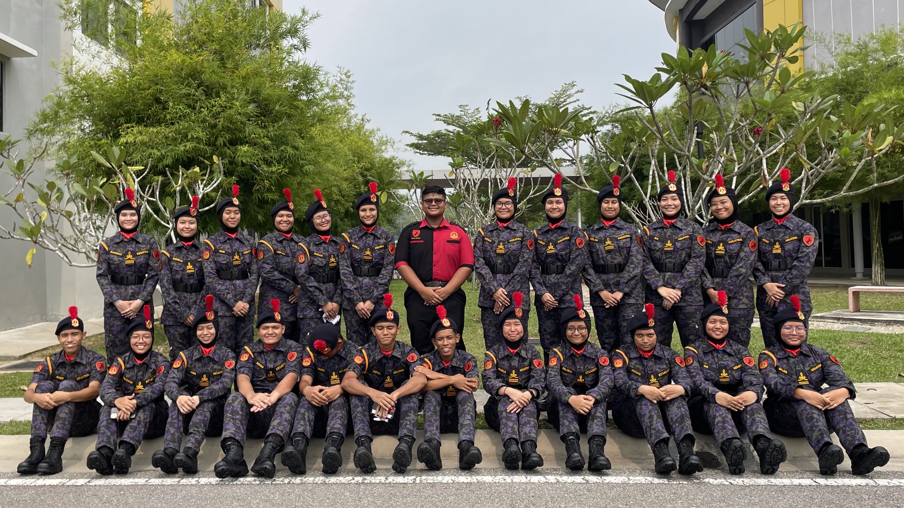
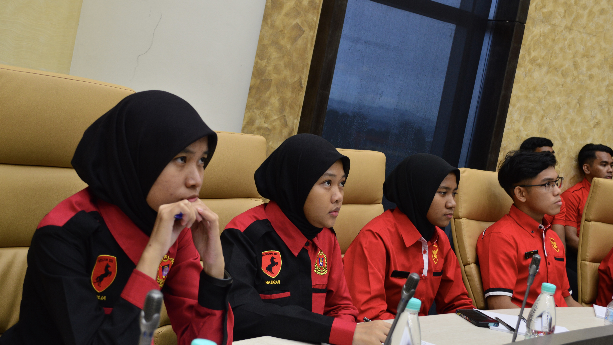

Organization skills
Do you know about Komander Kesatria at UiTM? Basically it is a uniform body.
You can read more here
Kesatria UiTM. We usually are incharge for every
extracurricullar activities held in UiTM.

Problem solving skills
Having strong problem-solving skills is crucial in navigating the complexities of both personal and professional life.
These skills empower individuals to analyze challenges, devise effective solutions, and adapt to changing circumstances.
In the workplace, problem-solving abilities are highly sought after, as they contribute to innovation, efficiency, and overall
success in addressing the myriad issues that may arise.